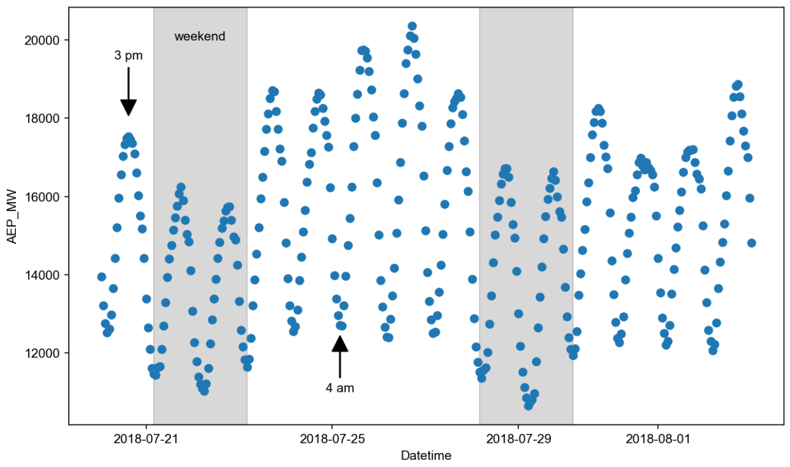

Basic Usage#
Gloria is designed for one core task: modeling and forecasting time-series data. The standard workflow has three steps:
Load and preprocess your time-series data.
Create and configure a Gloria model.
Fit and forecast by applying the model to the data
The example below walks through these steps with a minimal dataset. Even as your time-series become more complex, the overall pattern stays the same - only the model-configuration details grow in depth. We’ll cover those advanced options in the next sections.
1. Load and Preprocess#
We are going to use hourly data showing the energy consumption recorded by American Electric Power Company, Inc. [1]. The underlying csv-file has two columns: Its timestamp column is called "Datetime" and the metric column showing the energy consumption in megawatts is called "AEP_MW". In the first bit of code, we load the data and convert the timestamps to actual datetime objects. Also, for the sake of clarity, we restrict ourselves to two weeks worth of data, corresponding to the last 336 hours. Eventually, inspect the data by plotting them.
import pandas as pd # For loading and processing
import matplotlib.pyplot as plt # For plotting
# Load the data
data = pd.read_csv("data/AEP_hourly.csv")
# Save the column names for later usage
timestamp_name = "Datetime"
metric_name = "AEP_MW"
# Convert to datetime
data[timestamp_name] = pd.to_datetime(data[timestamp_name])
# Restrict data to last 14 days
data = data.sort_values(by = "Datetime").tail(336)
# Inspect the data
fig, ax = plt.subplots(figsize=(10, 6), dpi=150)
ax.plot(data[timestamp_name], data[metric_name], "o")
From the plot we can see daily oscillations with maxima around afternoon and minima during nights. Additionally, we recognize weekly patterns with reduced consumption during weekends.
{kind=link}
2. Create and Configure#
Creating a Gloria model can be done in only two lines of code:
from gloria import Gloria
m = Gloria()
The Gloria constructor has some sensible defaults but often we need to change these values. In particular we are going to tell Gloria:
The column names it has to expect by setting
timestamp_nameas well asmetric_name,The hourly sampling of the data by setting
sampling_period = "1h",To use a model based on the gamma distribution, as the power consumption is strictly positive and the values are on a continuous scale, and
Not to introduce any changepoints by setting
"n_changepoints = 0", as we expect no significant trend change on such a short timescale.
# Import the Gloria forecaster class
from gloria import Gloria
# Set up the model
m = Gloria(
model = "gamma",
metric_name = metric_name,
timestamp_name = timestamp_name,
sampling_period = "1 h",
n_changepoints = 0
)
# Add observed seasonalities
m.add_seasonality(name="daily", period="24 h", fourier_order=2)
m.add_seasonality(name="weekly", period="7 d", fourier_order=2)
In the two last lines of code, we equipped the model with daily and weekly seasonalities using add_seasonality(). For both seasonalities we chose a maximum Fourier order of 2.
3. Fit and Forecast#
Setting up the model was the major part of work. The remainder is fairly simple. First, we call the fit() method on the preprocessed data. This step will do some further internal processing on the data and forward them to Gloria’s fit-backend. Once the model is fitted, we can use it to make forecasts by calling predict(). The argument periods=96 is in units of sampling_period, hence it corresponds to 96 hours or 4 days of forecast period [2]. Eventually, we plot the result:
# Fit the model to the data
m.fit(data)
# Predict
prediction = m.predict(periods=96)
# Plot
fig, ax = plt.subplots(figsize=(12, 8), dpi=140)
ax.plot(data[timestamp_name], data[metric_name], "o", label="data")
ax.plot(prediction[timestamp_name], prediction["trend"], "black", label="trend")
ax.plot(prediction[timestamp_name], prediction["yhat"], "red", label="fit")
ax.fill_between(
prediction[timestamp_name],
prediction["observed_lower"],
prediction["observed_upper"],
color="gray",
alpha=0.3,
label="ci",
)
In the figure we see that our model nicely fits the data with most of them covered by the confidence interval. Also the drop ofpower consumption during the weekend is well reproduced in both training data and forecast.

Footnotes